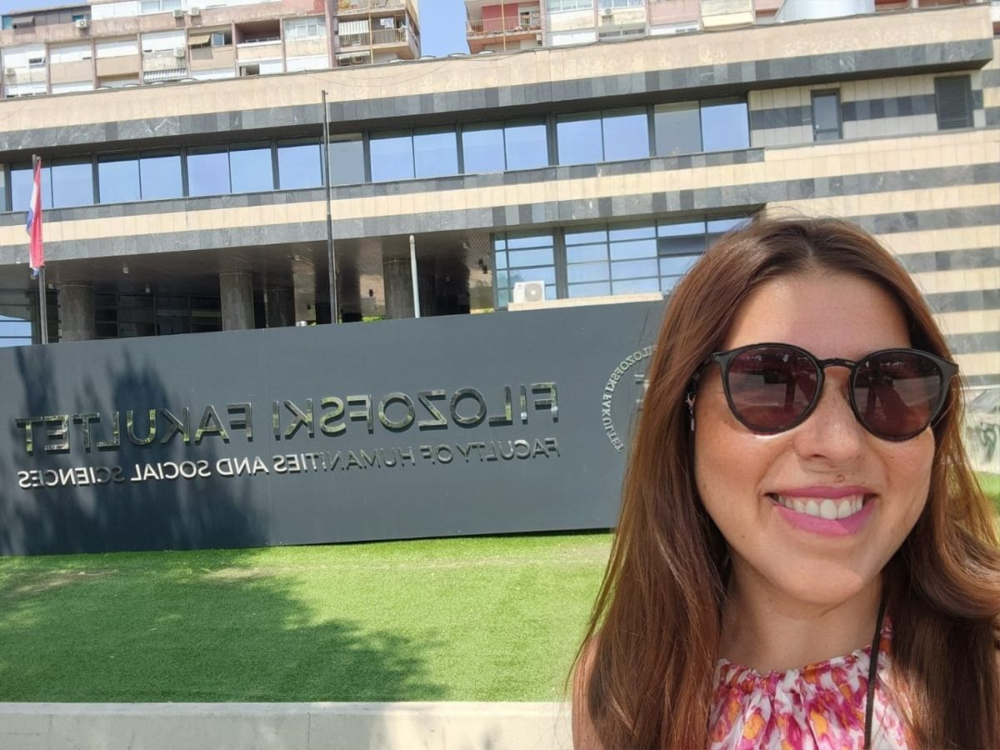

Aprende croata en español, desde cero.
Clases gratuitas para quienes llevan Croacia en la sangre o en el apellido. Frases que se usan de verdad, pronunciación explicada paso a paso y cultura croata, para hablar con tu familia y llegar a Croacia sintiéndote en casa.
Pomalo.
Despacio, sin apuro, paso a paso. Así se vive en la costa croata y así aprendes croata aquí.
En Croacia Lovers siempre aprendes algo nuevo.
Vidimo se! · Nos vemosAprende con mis clases más nuevas.
 6:36
Reto del espejo: ¿conoces el opuesto? 48 palabras en croata
Ver en YouTube →
6:36
Reto del espejo: ¿conoces el opuesto? 48 palabras en croata
Ver en YouTube →
 7:12
100 frases cotidianas en croata para principiantes A1
Ver en YouTube →
7:12
100 frases cotidianas en croata para principiantes A1
Ver en YouTube →
 3:37
Abecedario croata: las 30 letras con pronunciación
Ver en YouTube →
3:37
Abecedario croata: las 30 letras con pronunciación
Ver en YouTube →
 13:46
En el ferry a Brač con Hilda y Stjepan: diálogos reales, episodio 1
Ver en YouTube →
13:46
En el ferry a Brač con Hilda y Stjepan: diálogos reales, episodio 1
Ver en YouTube →

Hola, soy Lory Guic.
Soy chilena, nieta de un croata nacido en Milna, en la isla de Brač, que emigró a Chile. En 2025 recibí una beca del Estado croata y estudié lengua y cultura croatas en la Universidad de Split.
Creé Croacia Lovers para compartir lo que aprendí con quienes, como yo, sienten a Croacia como parte de su historia. Enseño croata a hispanohablantes con clases prácticas, vocabulario y recursos gratuitos, para que puedas comunicarte con confianza.
- Raíces
- Milna, isla de Brač43,33° N · 16,45° E
- Estudios
- Lengua y cultura croatasFacultad de Filosofía, Universidad de Split · 2025
- Desde
- Santiago de ChileClases en español para Latinoamérica y España
Todo lo que necesitas para empezar a hablar croata.
Ć Pronunciación
El alfabeto croata letra por letra, con audio y explicado en español.
Riječ Vocabulario
Palabras para la familia, la cocina, la casa y los viajes.
Biti Gramática
Género, plural y verbos básicos, sin clases eternas.
Bok! Frases
Saludos, preguntas y conversaciones de la vida diaria.
Fjaka Cultura
Tradiciones, fiestas y costumbres croatas.
Split Viajes
Split, Brač, Zadar, Omiš y Dubrovnik contados por quien vivió allí.
fia-ka
El arte dálmata de no hacer nada y disfrutarlo. Es ese momento de calma después del almuerzo, frente al mar, cuando el tiempo parece detenerse.
Cada semana aprendes palabras y frases nuevas en el canal.